Voice-Over
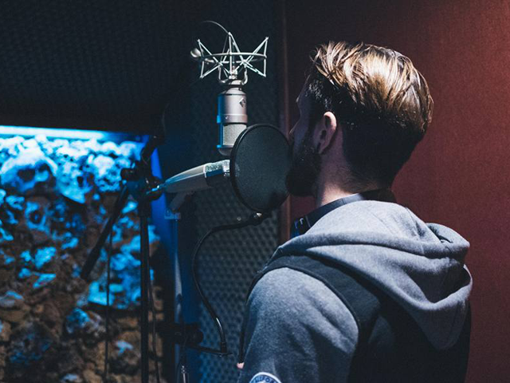
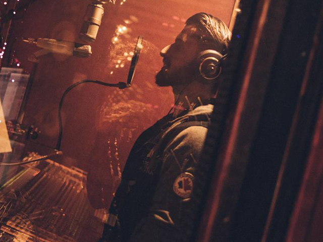
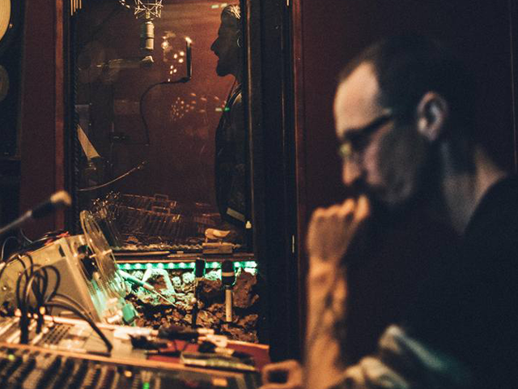
As a voice-over artist and dubbing actor, I have developed skills that allow me to bring fictional and animated characters to life, voice radio commercials, record advertising, corporate videos, and audiobooks. My voice is clear, expressive, and versatile, and I have the ability to adapt to different scripts and characters naturally and effectively.
Music artist
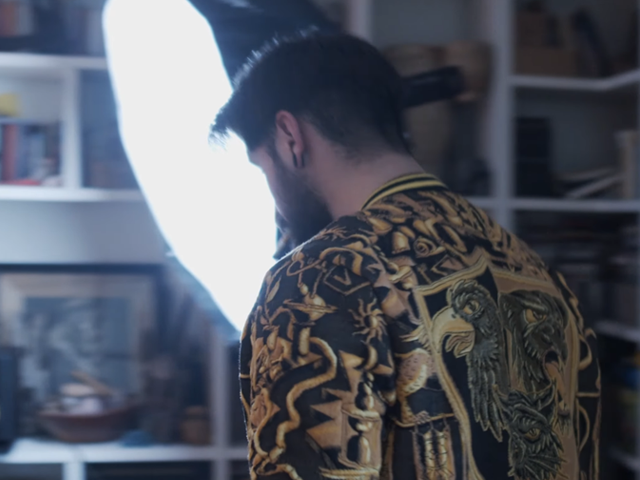
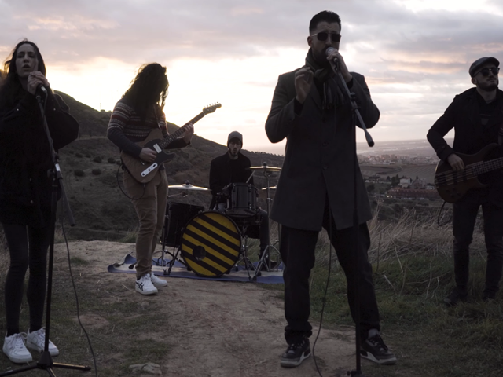
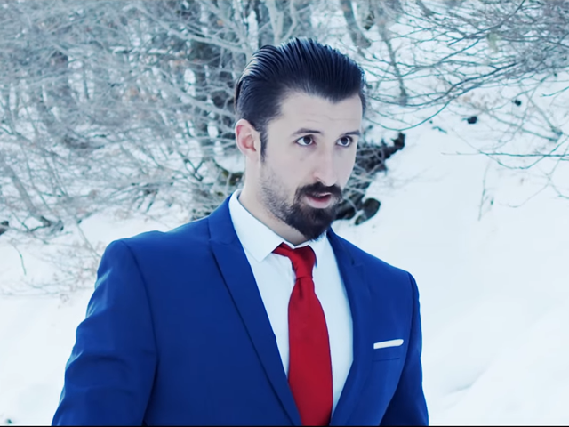
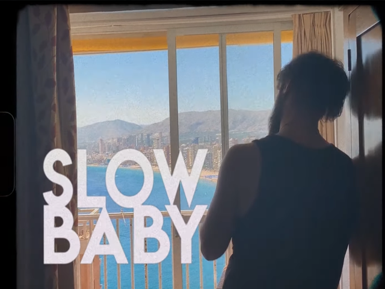
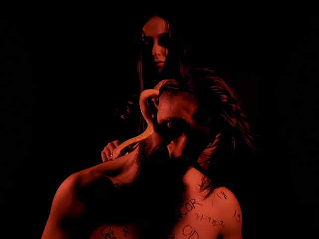
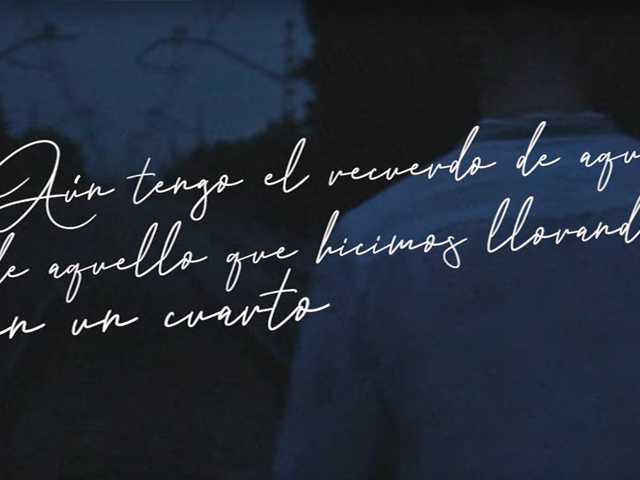
Since the age of thirteen, I have been writing, composing, and recording my own musical works. I have also worked on and directed my music videos, several of which have won awards in various competitions across multiple regions.
Click on the images to access the works.
Music Production & VisualFx Design
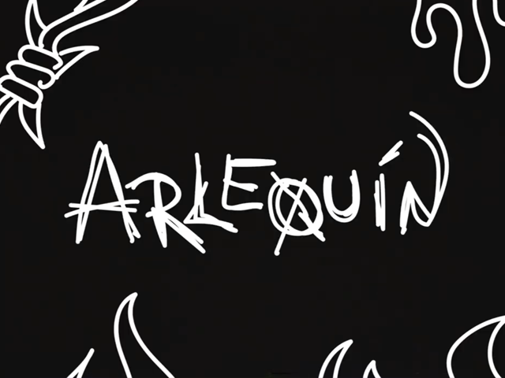
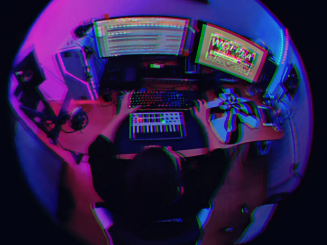
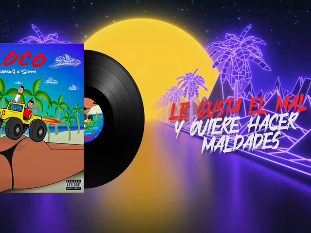
As the beatmaker and audiovisual editor, I specialize in helping my clients achieve their creative vision through high-quality video and music production.
I use a variety of software tools and techniques to create custom drum patterns, manipulate sound samples, and add effects to produce unique and professional beats.
Similarly, I enhance the quality of visual content through color grading, sound design, and editing techniques to produce visually stunning videos.
Whether you need a high-quality video or unique instrumental beats, I have the expertise to take your project to the next level. Contact me today to learn more about how my services can help you achieve your creative goals.
Click on the images to access the works.